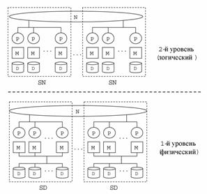

Наиболее распространенной системой классификации параллельных систем баз данных является система, предложенная Майклом Стоунбрейкером (Michael Stonebraker) в работе. Схематично данная классификация изображена на рис. 1. Здесь P обозначает процессор, M – модуль оперативной памяти, D – дисковое устройство, N - соединительную сеть.
Рисунок 1. Классификация Стоунбрейкера
В соответствие с классификацией Стоунбрейкера параллельные системы баз данных могут быть разделены на следующие три базовых класса в зависимости от способа разделения аппаратных ресурсов:
(a) SE (Shared-Everything) - архитектура с разделяемыми памятью и дисками;
(б) SD (Shared-Disks) - архитектура с разделяемыми дисками;
(в) SN (Shared-Nothing) - архитектура без совместного использования ресурсов.
SE архитектура (в работе эта архитектура обозначается как Shared-Memory) представляет системы баз данных, в которых все диски напрямую доступны всем процессорам с одинаковым временем доступа и все процессоры разделяют общую оперативную память. Межпроцессорные коммуникации в SE системах осуществляются через общую оперативную память. Доступ к дискам в SE системах обычно осуществляется через общий буферный пул. При этом следует отметить, что каждый процессор в SE системе имеет собственную кэш-память.
Существует большое количество параллельных систем баз данных с SE архитектурой. По существу, все ведущие коммерческие СУБД сегодня имеют реализацию на базе SEархитектуры. В качестве одного из первых примеров портирования с однопроцессорной системы на SE архитектуру можно привести реализацию DB2 на IBM3090 с 6 процессорами. Другим примером является параллельное построение индексов в Informix OnLine 6.0. Следует отметить, однако, что подавляющее большинство коммерческих SEсистем использует только межтранзакционный параллелизм (то есть внутритранзакционный параллелизм отсутствует). Тем не менее, к настоящему моменту создано несколько исследовательских прототипов SE систем, использующих внутризапросный параллелизм, например, XPRS, DBS3 и Volcano.
Базовой аппаратной платформой для реализации систем с SE архитектурой обычно служит SMP, хотя потенциально SE системы можно строить на платформах с архитектурой NUMA и даже MPP с виртуально общей, физически распределенной памятью.
SD архитектура представляет системы баз данных, в которых любой процессор имеет доступ к любому диску, однако каждый процессор имеет свою приватную оперативную память. Процессоры в таких системах соединены посредством некоторой высокоскоростной сети, позволяющей осуществлять передачу данных.
Примерами параллельных систем баз данных с SD архитектурой являются IBM IMS, Oracle Parallel Server, IBM Parallel Sysplex и др.
SN архитектура характеризуется наличием у каждого процессора собственной оперативной памяти и собственного диска. Как и в SD системах, процессорные узлы соединены некоторой высокоскоростной сетью, позволяющей организовывать обмен сообщениями между процессорами. К настоящему моменту создано большое количество исследовательских прототипов и несколько коммерческих систем с SN архитектурой, использующих фрагментный параллелизм. В качестве примеров исследовательских прототипов SN систем можно привести следующие системы: ARBRE, BUBBA, EDS, GAMMA, KARDAMOM, PRISMA.
Примерами коммерческих систем с SN архитектурой являются NonStop SQL, Informix PDQ, NCR (Teradata) DBC/1012 и др.
2.1 Расширение классификации Стоунбрейкера
Копеланд (Copeland) и Келлер (Keller) предложили в работе расширение классификации Стоунбрейкера путем введения двух дополнительных классов архитектур параллельных машин баз данных (рис. 1):
(г) CE (Clustered-Everything) - архитектура с SE кластерами, объединенными по принципу SN;
(д) CD (Clustered-Disk) - архитектура с SD кластерами, объединенными по принципу SN. Граница SD кластеров на рис. 2 распространены на общую (глобальную) соединительную сеть, так как в них может присутствовать собственная (локальная) соединительная сеть.
Рисунок 2. Расширение классификации Стоунбрейкера
Эти архитектуры также получили название иерархических. На рис. 2 изображены двухуровневые иерархии. Однако классификационный подход Копеланда и Келлера легко может быть распространен на архитектуры с тремя и более уровнями иерархии. В качестве примера можно привести трехуровневую иерархическую архитектуру CD2. Данная архитектура была использована при проектировании системы Омега.
Гибридная архитектура CDN
Эрхард Рам в работе предложил рассматривать гибридные архитектуры. Гибридные архитектуры нельзя отнести ни к одному из выше описанных классов. В качестве примера гибридной архитектур можно привести архитектуру CDN. Данная архитектура строится как набор однотипных SD кластеров, объединенных по принципу SN. Отличительной особенностью данной системной архитектуры является то, что на верхних уровнях системной иерархии SDкластеры рассматриваются как SN системы (рис. 3). Это выражается в том, что каждому процессорному узлу логически назначается отдельный диск. Такой подход позволяет избежать проблем, связанных с реализацией глобальной таблицы блокировок и поддержкой когерентности кэшей, характерных для SD систем, и одновременно использовать преимущества SD архитектуры в плане возможности балансировки загрузки. Подобный подход был также использован при разработке параллельной системы баз данных NonStop SQL/MP.

Рисунок 3. Гибридная архитектура CDN
Сравнительный анализ SE, SD и SN архитектур показал, что для масштабируемых высокопроизводительных систем баз данных из трех указанных архитектур наиболее предпочтительной является SN архитектура.
Таблица 2. Сравнение архитектур
| SE | SD | SN | CE | CD | CDN | |
| Масштабируемость | 0 | 1 | 2 | 3 | 3 | 3 |
| Доступность данных | 0 | 1 | 3 | 1 | 2 | 2 |
| Баланс загрузки | 3 | 2 | 0 | 2 | 1 | 1 |
| Межпроцессорные коммуникации | 3 | 0 | 0 | 2 | 1 | 1 |
| Когерентность кэшей | 2 | 0 | 3 | 2 | 0 | 3 |
| Организация блокировок | 2 | 0 | 3 | 2 | 0 | 3 |
| Сумма баллов | 10 | 4 | 11 | 12 | 7 | 13 |
В табл. 2 приведен сравнительный анализ шести различных архитектур параллельных систем баз данных по критериям, непосредственно вытекающим из требований к параллельной системе баз данных. Для оценки показателей используется трехбалльная система: 0 ‑ «плохо»; 1 - «удовлетворительно», 2 - «хорошо», 3 – «превосходно».
Масштабируемость SE архитектуры характеризуется как низкая. Это связано с тем, что при количестве процессорных узлов больше 30 общая шина доступа к памяти и дискам становится узким местом. SD архитектура демонстрирует среднюю масштабируемость, так как общая шина доступа к дискам по-прежнему остается узким местом. SN, CD, CE и CDN архитектуры демонстрируют хорошую масштабируемость.
Доступность данных для SN архитектуры можно классифицировать как среднюю. Это связано с тем, что страховочные копии в SN системе должны фрагментироваться по многим узлам для того, чтобы в случае отказа одного из дисков его страховочная копия была доступна в параллельном режиме (в противном случае может возникнуть серьезный дисбаланс загрузки). Поддержание когерентности фрагментированных страховочных копий потребует определенных накладных расходов, связанных прежде всего с пересылкой большого количества данных по соединительной сети. SE и CE архитектуры характеризуется "плохой" доступностью данных из-за низкой аппаратной отказоустойчивости SE кластера.
SD, CD и CDN архитектуры демонстрируют наилучшую доступность данных, так как все проблемы, связанные с обеспечением высокой доступности, могут быть эффективно решены на уровне отдельных SD кластеров.
Баланс загрузки для SN архитектуры является серьезной проблемой, так как SN системы весьма чувствительны к перекосу данных. Иерархические архитектуры типа CE, CD и CDN позволяют достичь лучшей сбалансированности загрузки, так как баланс загрузки может здесь выполняться на двух уровнях - межкластерном и внутрикластерном. SD кластеры позволяют достичь удовлетворительной балансировки загрузки, поскольку каждому процессору доступны все диски. Наилучший баланс загрузки обеспечивают SE кластеры, так как помимо дисков процессорам доступна вся оперативная память.
Высокая стоимость межпроцессорных коммуникаций является одной из слабых сторон SN архитектуры. Использование CE архитектуры позволяет значительно сократить накладные расходы, связанные с межпроцессорными коммуникациями. Межпроцессорные коммуникации на уровне SE кластера могут быть реализованы очень эффективно через разделяемую память. CD и CDN архитектуры уступают по этому показателю CE архитектуре, однако могут превзойти SN архитектуру, так как потенциально внутрикластерные коммуникации могут быть реализованы более эффективно, чем межкластерные.
Когерентность кэшей является серьезной проблемой для CD архитектуры, так как в SD кластере одни и те же страницы разделяемых дисков буферизуются в индивидуальных модулях памяти. Копии страниц остаются в буферных пулах некоторое время после завершения обратившейся к ним транзакции, поэтому изменения, сделанные одним узлом SD кластера, могут быть аннулированы изменениями, сделанными другим узлом SD кластера. CE архитектура имеет лучшие показатели по данному параметру по сравнению с CD архитектурой, так как SEкластеры используют общий буферный пул в разделяемой памяти. Однако CE архитектура уступает по этому параметру SN архитектуре, так как в SE кластере необходимо поддерживать когерентность данных в индивидуальных кэш-памятях процессоров. CDN архитектура свободна от указанного недостатка, так как на виртуальном уровне в ней отсутствует разделение ресурсов. В SN системах проблема когерентности так же отсутствует, так как у них нет разделяемых ресурсов.
Еще одной серьезной проблемой для CD архитектуры являются трудности с организацией блокировок объектов базы данных со стороны обращающихся к ним транзакций. В SDкластере на каждом процессорном узле необходимо поддерживать копию глобальной таблицы блокировок, что может потребовать серьезных накладных расходов. SE архитектура в значительной мере избавлена от этой проблемы, так как глобальная таблица блокировок SE кластера хранится в единственном экземпляре в разделяемой оперативной памяти. В SN системах нет необходимости в поддержании глобальной таблицы блокировок по причине отсутствия разделения ресурсов, поэтому SN архитектура занимает наилучшую позицию по данному параметру. CDN архитектура в полной мере наследует это качество от SN архитектуры.
Исходя из проведенного анализа, мы можем сделать вывод, что нет весомых причин для поддержки CD архитектуры в чистом виде. CE архитектура выглядит более привлекательно, чем SE архитектура. Однако, если принимать во внимание требования к параллельной системе баз данных, наилучшим выбором является CDN архитектура.